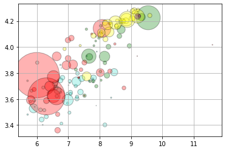
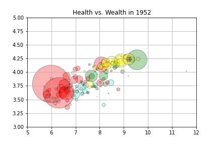
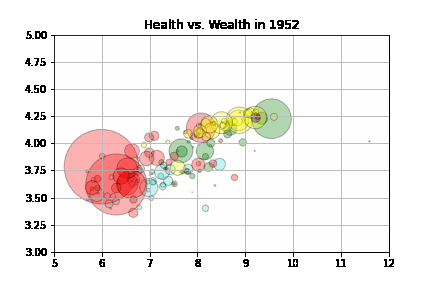

Using interactive widgets with the notebook#
The ipywidgets library contains a variety of tools for making interactive elements in the notebook environment. Some basic examples are shown below, and your goal is to incorporate widgets into a plot to add interactivity. Be sure to check out the documentation here for further examples and inspiration.
import matplotlib.pyplot as plt
import numpy as np
import pandas as pd
import ipywidgets as widgets
from ipywidgets import interact, interactive
-------------------------------------------------------
ModuleNotFoundError Traceback (most recent call last)
Cell In[1], line 5
2 import numpy as np
3 import pandas as pd
----> 5 import ipywidgets as widgets
6 from ipywidgets import interact, interactive
ModuleNotFoundError: No module named 'ipywidgets'
Using a Slider#
def f(x):
return x
interact(f, x = widgets.FloatSlider(min = -3, max = 3, step = 0.1));
interact(f, x=['apples','oranges']);
Alternative Approaches#
#using a decorator
@interact(x = 10)
def f(x):
return x**2
#interactive returns object to then be displayed
from IPython.display import display
def f(a, b):
display(a + b)
return a+b
w = interactive(f, a=10, b=20)
display(w)
#controlling layout with HBox
a = widgets.IntSlider()
b = widgets.IntSlider()
c = widgets.IntSlider()
ui = widgets.HBox([a, b, c])
def f(a, b, c):
print((a, b, c))
out = widgets.interactive_output(f, {'a': a, 'b': b, 'c': c})
display(ui, out)
def f(m, b):
plt.figure(2)
x = np.linspace(-10, 10, num=1000)
plt.plot(x, m * x + b)
plt.ylim(-5, 5)
plt.grid()
plt.axhline(color = 'black')
plt.axvline(color = 'black')
plt.title(f'$f(x) = {m}x + {b}$')
plt.show()
interactive_plot = interactive(f, m=(-2.0, 2.0), b=(-3, 3, 0.5))
output = interactive_plot.children[-1]
output.layout.height = '350px'
interactive_plot
Working with Gapminder Data#
df = pd.read_csv('https://raw.githubusercontent.com/jfkoehler/nyu_bootcamp_fa24/refs/heads/main/data/gapminder_all.csv')
df.head()
| continent | country | gdpPercap_1952 | gdpPercap_1957 | gdpPercap_1962 | gdpPercap_1967 | gdpPercap_1972 | gdpPercap_1977 | gdpPercap_1982 | gdpPercap_1987 | ... | pop_1962 | pop_1967 | pop_1972 | pop_1977 | pop_1982 | pop_1987 | pop_1992 | pop_1997 | pop_2002 | pop_2007 | |
|---|---|---|---|---|---|---|---|---|---|---|---|---|---|---|---|---|---|---|---|---|---|
| 0 | Africa | Algeria | 2449.008185 | 3013.976023 | 2550.816880 | 3246.991771 | 4182.663766 | 4910.416756 | 5745.160213 | 5681.358539 | ... | 11000948.0 | 12760499.0 | 14760787.0 | 17152804.0 | 20033753.0 | 23254956.0 | 26298373.0 | 29072015.0 | 31287142 | 33333216 |
| 1 | Africa | Angola | 3520.610273 | 3827.940465 | 4269.276742 | 5522.776375 | 5473.288005 | 3008.647355 | 2756.953672 | 2430.208311 | ... | 4826015.0 | 5247469.0 | 5894858.0 | 6162675.0 | 7016384.0 | 7874230.0 | 8735988.0 | 9875024.0 | 10866106 | 12420476 |
| 2 | Africa | Benin | 1062.752200 | 959.601080 | 949.499064 | 1035.831411 | 1085.796879 | 1029.161251 | 1277.897616 | 1225.856010 | ... | 2151895.0 | 2427334.0 | 2761407.0 | 3168267.0 | 3641603.0 | 4243788.0 | 4981671.0 | 6066080.0 | 7026113 | 8078314 |
| 3 | Africa | Botswana | 851.241141 | 918.232535 | 983.653976 | 1214.709294 | 2263.611114 | 3214.857818 | 4551.142150 | 6205.883850 | ... | 512764.0 | 553541.0 | 619351.0 | 781472.0 | 970347.0 | 1151184.0 | 1342614.0 | 1536536.0 | 1630347 | 1639131 |
| 4 | Africa | Burkina Faso | 543.255241 | 617.183465 | 722.512021 | 794.826560 | 854.735976 | 743.387037 | 807.198586 | 912.063142 | ... | 4919632.0 | 5127935.0 | 5433886.0 | 5889574.0 | 6634596.0 | 7586551.0 | 8878303.0 | 10352843.0 | 12251209 | 14326203 |
5 rows × 38 columns
continent_color = {'Africa': 'turquoise',
'Asia': 'red',
'Oceania': 'purple',
'Americas': 'green',
'Europe':'yellow'}
df['colors'] = df['continent'].map(continent_color)
df['colors'].value_counts()
turquoise 52
red 33
yellow 30
green 25
purple 2
Name: colors, dtype: int64
df['continent'].unique()
array(['Africa', 'Americas', 'Asia', 'Europe', 'Oceania'], dtype=object)
GOALS
Build an interactive visualization (scatterplot) of life expectancy vs. GDP where we can use a slider to move through the years 1952 - 2007.
Build an interactive plotter for stock data using pandas DataReader to limit upper and lower timeframes for a stock, or something else!
plt.scatter(np.log(df['gdpPercap_1952']), np.log(df['lifeExp_1952']), c = df['colors'],
s = df['pop_1952']/10**5, alpha = 0.3, edgecolor = 'black')
plt.grid();

Animating the Plot#
Below, we use the gif library to create an animation of the plot.
#!pip install -U gif
import gif
@gif.frame
def gapper(year):
plt.scatter(np.log(df[f'gdpPercap_{year}']), np.log(df[f'lifeExp_{year}']), c = df['colors'],
s = df[f'pop_{year}']/10**5, alpha = 0.3, edgecolor = 'black')
plt.grid();
plt.xlim(5, 12)
plt.ylim(3, 5)
plt.title(f'Health vs. Wealth in {year}')
gapper(1952)

interact(gapper, year = widgets.IntSlider(min = 1952, max = 2007, step = 5))
<function __main__.gapper(year)>
Making a gif#
frames = []
for i in range(1952, 2012, 5):
frame = gapper(i)
frames.append(frame)
gif.save(frames, 'gapminder.gif', duration=100, unit="ms", between="frames")
Display using Ipython.display#
from IPython.display import Image
Image('gapminder.gif')

Display in markdown cell#
<img src = gapminder.gif />